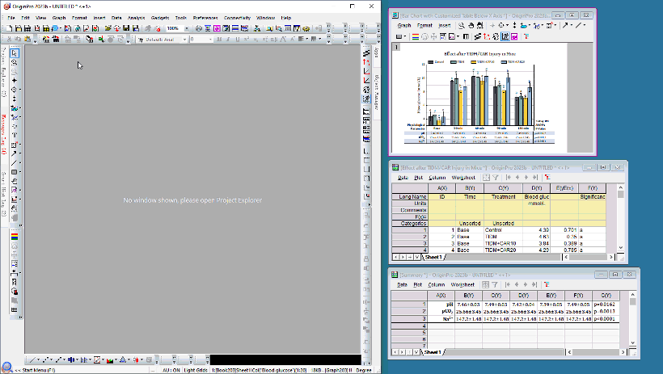

Frei bewegliche Fenster
Floating-Windows
Seit Origin 2023b können Origin-Fenster außerhalb des Origin-Arbeitsbereich als unabhängige Fenster verschoben werden. Diese frei beweglichen Fenster verfügen über benutzerdefinierbare Menüs und Symbolleistenschaltflächen, so dass Sie nicht zum Hauptfenster von Origin zurückkehren müssen, um Zugriff auf sie zu haben.
Jedes Origin-Fenster, einschließlich Arbeitsmappen, Matrixmappen, Diagramme, Layouts und Bildfenster können als frei bewegliche Fenster aus dem Arbeitsbereich gezogen werden.
Speichern und schließen Sie die Projektdatei mit frei beweglichen Fenstern. Diese Fenster sind weiterhin frei beweglich, wenn das Projekt erneut geöffnet wird.
Wie wird ein Fenster beweglich
Durch Ziehen nach außen
Die Funktion der frei beweglichen Fenster kann mit der Option Fenster: Frei bewegliche Fenster ein- und ausgeschaltet werden. Wenn sie eingeschaltet ist, können Origin-Fenster aus dem Origin-Arbeitsbereich herausgezogen werden.
Hinweis: Die Systemvariable @FWD steuert die Richtungen, in die die Fenster gezogen werden dürfen:
- @FWD=0: Alle Zugrichtungen aktiviert
- @FWD=1: Nur horizontale Richtung (Standard)
- @FWD=2: Nur vertikale Richtung (Standard)
|
Über das Menü
Wenn Ihr Computer über mehrere Monirote verfügt, kann das aktive Fenster frei bewegt werden, indem Sie Fenster: Aktives Fenster frei bewegen auswählen oder die Tastenkombination Strg + F9 verwenden.
- Wenn ein Fenster im Origin-Arbeitsbereich maximiert ist, führt die Verwendung der Tastenkombination oder des Menüs dazu, dass es sich frei bewegen lässt und auf dem zweiten Bildschirm maximiert wird.
- Wenn es mehrere Monitore auf Ihrem PC gibt, kann über die Systemvariable @FWLM gesteuert werden, zu welchem Monitor das Fenster bewegt wird.
Zum Beispiel:
Führen Sie @FWLM=2; im Skriptfenster aus und klicken Sie auf Fenster: Aktives Fenster frei bewegen. Das aktive Fenster wird dann zum zweiten Monitor verschoben.
Frei bewegliche Fenster zurückholen
- Ein einzelnes Fenster kann per Drag&Drop zurück in den Origin-Arbeitsbereich gezogen werden.
- Um alle frei beweglichen Fenster zurück in den Origin-Arbeitsbereich zu schieben, verwenden Sie die Tastenkombination Strg + Shift + F9 oder im Menü Fenster: Frei bewegliche Fenster zurückholen.
- 
- Führen Sie das folgende Labtalk-Skipt aus, um frei bewegliche Fenster zurück in den Origin-Arbeitsbereich zu verschieben.
document -fma;
 |
Wenn Sie zu anderen Ordnern wechseln, werden die obigen Methoden von Punkt 2 und 3 verwendet, um alle frei beweglichen Fenster zu ihren eigenen Ordnern zurückzuholen.
Wenn Sie alle frei beweglichen Fenster in den aktuellen Ordner zurückholen möchten (ob es ihre eigenen Ordner sind oder nicht), dann können Sie dieses Labtalk-Skript ausführen.
document -fmac;
|
Freie Beweglichkeit durch Labtalk-Skript steuern
Verwenden Sie Labtalk-Skript zum Steuern des aktiven Fensters, um dieses frei zu bewegen oder zurückzuholen.
page.floating=0; //Retract the active floating Windows page.floating=1; //The active window will float. Wenn es mehrere Monitore gibt, wird das Fenster zum ersten Monitor verschoben. page.floating=2; //The active window will float to second monitor. page.floating=@FWLM; //The active window will float to the monitor that is specified by system variable @FWLM
Symbolleistenschaltflächen und Menüs
Die frei beweglichen Fenster haben ihre eigenen Menüs und Symbolleistenschaltflächen. Wenn einige Menüs und Schaltflächen nicht im frei beweglichen Fenster gezeigt werden, können Sie zurück zum Origin-Hauptfenster gehen, um diese Hilfsmittel auszuwählen.
Menüs benutzerdefiniert anpassen
Die gezeigten Menüs können im Dialog Menüs der frei beweglichen Fenster, das über Einstellungen: Menüs der frei beweglichen Fenster benutzerdefiniert anpassen aufgerufen wird, benutzerdefiniert angepasst werden.
Zum Beispiel:

Symbolleistenschaltflächen benutzerdefiniert anpassen
- Die Symbolleistenschaltflächen können mit Ansicht: Symbolleisten oder Strg +T benutzerdefiniert angepasst werden. Im Dialog Anpassen werden die Optionen Frei bewegliches Diagramm, Frei bewegliches Layout, Frei bewegliche Matrix und Frei bewegliche Arbeitsmappe auf der Registerkarte Symbolleisten zur Verfügung gestellt. Wählen Sie den Typ der Symbolleiste des frei beweglichen Fensters, die Sie bearbeiten möchten, und verschieben Sie Schaltflächen, die Sie von der Registerkarte Befehle hinzufügen möchten, per Drag&Drop.
Zum Beispiel:

- Klicken Sie mit der rechten Maustaste und löschen Sie die Schaltflächen, die Sie entfernen möchten.
- Die letzte Gruppe auf der Registerkarte Befehle ist für die in Origin installierten Apps gedacht. Sie können Ihre favorisierten Apps auch in die Symbolleiste des frei beweglichen Fensters ziehen.
Objektverwaltung
Objektverwaltung zeigen/verbergen
Die Objektverwaltung für jedes frei bewegliche Fenster kann mit der Schaltfläche  ein- und ausgeschaltet werden.
ein- und ausgeschaltet werden.

Objektverwaltung im Hauptrahmen und in frei beweglichen Fenstern
- Wenn die Objektverwaltung im Hauptrahmen gezeigt und angedockt ist, wird die Objektverwaltung beim freien Verschieben eines Unterfensters innerhalb des frei beweglichen Fensters gezeigt.
- Wenn die Objektverwaltung nicht im Hauptrahmen angedockt ist, wird die Objektverwaltung beim freien Verschieben eines Unterfensters innerhalb dieses Fensters verborgen.
- Die Objektverwaltung im Hauptrahmen arbeitet mit dem aktiven Fenster zusammen. Die Objektverwaltung im frei beweglichen Fenster arbeitet nur mit dem frei beweglichen Fenster zusammen. Wenn das frei bewegliche Fenster das aktive Fenster ist, dann zeigen zwei Objektverwaltungen den gleichen Inhalt an.
Position der Objektverwaltung
- Sie können die Position der Objektverwaltung mit der Seiteneigenschaft page.fwom des Labtalk-Skripts steuern. Wenn Sie das Labtalk-Skript ausführen, ändert sich die Position sofort.
page.fwom=0; //Hide the Object Manager page.fwom=1/2/3/4/5; //Corresponds to setting the Object Manager to the Top/Left/Right/Bottom/Float position page.fwom=10; //If you Object Manager is hidden, you can use this to activate its last set position
- Die Systemvariable @FWOM entscheidet über die Position der Objektverwaltung für neu erstellte Fenster, wenn sie frei beweglich sind.
Hinweis: Diese Systemvariable ändert die vorhandene Fenstereinstellung nicht. Sie kann nur die neu hinzugefügten Fenster beeinflussen.
@FWOM=0; // Hide the Object Manager @FWOM=1/2/3/4; // Object Manager on top/left/right/bottom ( 3 is default value) @FWOM=5; //Object Manager is floating
Zum Beispiel:
- Die Objektverwaltung wird nicht im Hauptrahmen angedockt. Standardmäßig ist @FWOM = 3. Wenn Sie das neue Fenster Book1 erstellen und es aus dem Origin-Arbeitsbereich herausziehen, klicken Sie auf die Schaltfläche , um die Objektverwaltung zu zeigen. Die Objektverwaltung befindet sich auf der rechten Seite.
- Führen Sie @FWOM=2； im Skriptfenster aus. Die Position der Objektverwaltung im existierenden Fenster Book1 wird nicht geändert. Wenn Sie aber ein anderes neues Fenster Book2 erstellen, nachdem die Systemvariable geändert wurde, dann machen Sie es frei beweglich und zeigen Sie die Objektverwaltung an. Dieses Mal befindet sich die Objektverwaltung auf der linken Seite.
Hinweis:
- @FWOM kann nur das neu erstellte Unterfenster beeinflussen. Wenn das Unterfenster gezogen wird, um es frei zu bewegen und die Position der Objektverwaltung zu ändern, "erinnert" sich das Unterfenster an diese neuen Änderungen und wird nicht erneut von @FWOM beeinflusst.
- Wenn die Objektverwaltung nicht im Hauptrahmen angedockt ist, auch wenn die Systemvariable auf @FWOM=1/2/3/4 gesetzt ist, wird die Objektverwaltung im neuen frei beweglichen Fenster weiterhin verborgen. Wenn die Objektverwaltung im Hauptrahmen angedockt ist, folgt die Objektverwaltung im frei beweglichen Fenster der Einstellung von @FWOM.
- Wenn die Objektverwaltung im Hauptrahmen gezeigt wird (angedockt oder frei beweglich) und die Systemvariable auf @FWOM = 0 gesetzt ist, dann wird die Objektverwaltung im frei beweglichen Fenster verborgen.
- Wenn die Objektverwaltung im Hauptrahmen frei beweglich ist und die Systemvariable auf @FWOM = 5 gesetzt ist, dann wird die Objektverwaltung im frei beweglichen Fenster auch frei beweglich.
|
Frei bewegliche Fenster automatisch verankert
- Wenn Sie ein Fenster als frei bewegliches Fenster aus den Arbeitsbereichen herausziehen, wird es automatisch verankert und die Schaltfläche
 wird auf der Titelleiste gezeigt. Beim Zurückholen des Fensters in den Hauptarbeitsbereich wird die Verankerung des Fensters automatisch aufgehoben.
wird auf der Titelleiste gezeigt. Beim Zurückholen des Fensters in den Hauptarbeitsbereich wird die Verankerung des Fensters automatisch aufgehoben.
- Die frei beweglichen Fenster werden weiterhin außerhalb der Arbeitsbereiche gezeigt, auch wenn Systemvariable @PWS = 0. Dies ist etwas anderes als das nicht frei bewegliche verankerte Fenster. Es kann sich auf den Abschnitt Fenster verankern beziehen.
- Die Informationen des ursprünglichen Ordner werden im Titel des verankerten Fensters gezeigt, falls der aktuelle Ordner nicht der eigene Ordner des frei beweglichen Fensters ist.
- Um zum frei beweglichen Fenster des eigenen Ordner zurückzugehen, klicken Sie auf die Schaltfläche Zum ursprünglichen Ordner wechseln
 auf der Symbolleiste Ordner und Fenster oder wählen Sie Zum ursprünglichen Ordner wechseln im Kontextmenü der Fenstertitelleiste.
auf der Symbolleiste Ordner und Fenster oder wählen Sie Zum ursprünglichen Ordner wechseln im Kontextmenü der Fenstertitelleiste.
- Es ist einfach, ein frei bewegliches Fenster zum aktuellen Ordner zu verschieben, indem Sie es zurück in den Arbeitsbereich ziehen.
Frei bewegliche Fenster im Projekt Explorer
Im unteren Bedienfeld des Projekt Explorers verwendet Origin eine unterschiedliche Farbe für den Fensternamen, um frei bewegliche Fenster zu kennzeichnen.

|
Die Systemvariablen @FWCA und @FWCI können verwendet werden, um die Farbe für die Namen von aktiven und inaktiven Fensters festzulegen.
@FWCA=color(0,255,0,1); //Set name color for active floating window to green.
Wenn Sie zurück zur Standardfarbe möchten, können Sie im Menü Einstellungen: Systemvariablen auswählen wählen, um den Dialog zu öffnen und @FWCA oder @FWCI zu löschen.
|
Dialoge in frei beweglichen Fenstern aufrufen
Die aktuelle Logik für die anfängliche Dialogposition besteht darin, dass der Dialog in der Mitte des Monitors, in dem sich Ihr Cursor befindet, angezeigt wird. Wenn Sie den Dialog in eine neue Position bringen, wird seine Position nur in dieser speziellen Origin-Sitzung gespeichert. Wenn Sie Origin neu starten, verwendet es erneut die Cursorposition.
Wenn Sie beispielsweise zwei Diagrammfenster haben, befindet sich eines im Arbeitsbereich von Origin auf dem Hauptmonitor und das andere als frei bewegliches Diagramm auf einem zweiten Monitor. Wenn sich Ihr Cursor im Hauptarbeitsbereich befindet und Sie den Dialog Details Zeichnung durch Doppelklick auf das Diagrammfenster öffnen, wird er in der Mitte des Hauptmonitors gezeigt. Wenn Sie doppelt auf das frei bewegliche Diagrammfenster klicken, um den Dialog Details Zeichnung zu öffnen, wird Ihr Cursor sich auf dem zweiten Monitor befinden und der Dialog daher in der Mitte dieses Monitors angezeigt.
Wenn Sie sich dafür entscheiden, die Dialoge neu zu positionieren, sollten Sie wissen, dass die Dialogpositionen für jeden Monitor einzigartig sind. Versuchen Sie, im obigen Beispiel den Dialog Details Zeichnung im Hauptmonitor und im zweiten Monitor neu zu positionieren. Sie werden feststellen, dass die Positionen separat gespeichert werden. Auch hier wird ein Neustart von Origin die Positionen zurücksetzen und die Cursorlogik wird wieder aktiviert.